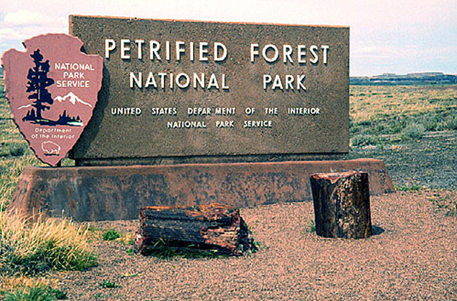
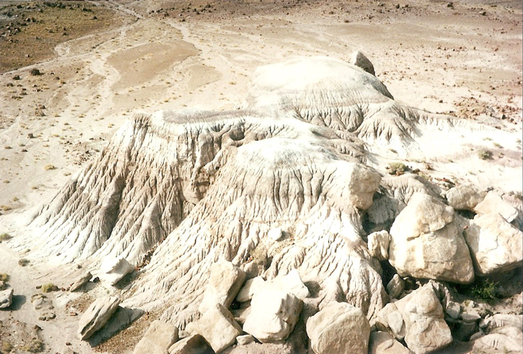
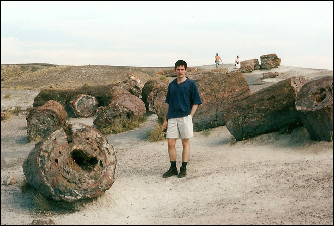
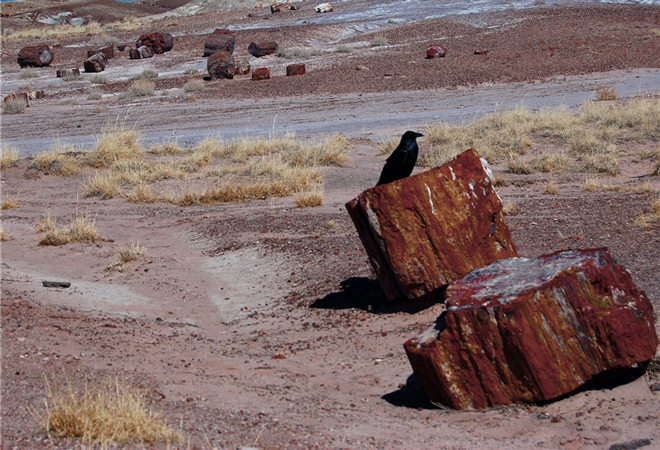
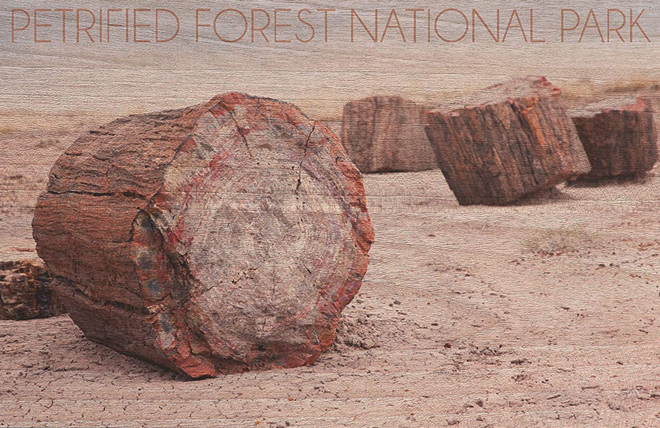
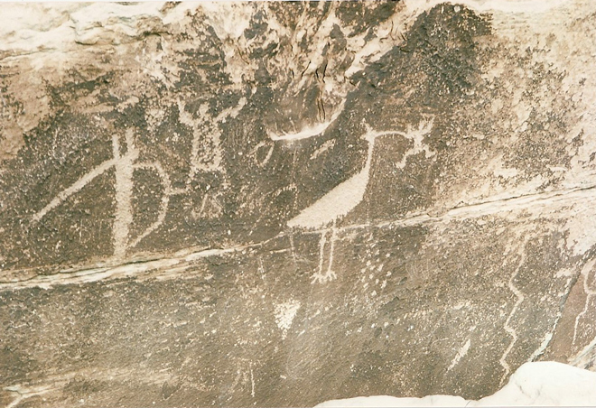
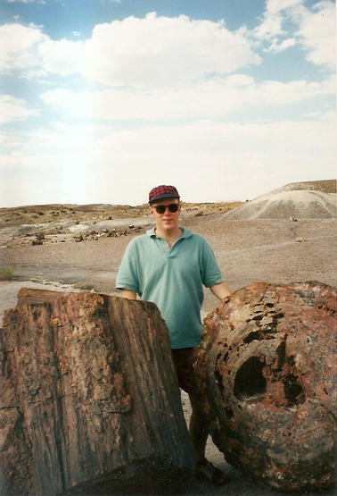
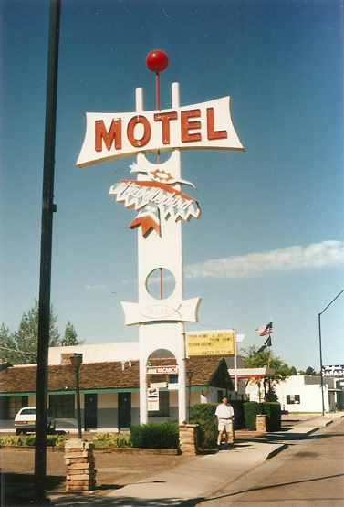

.
Petrified Forest National Park straddles the border between Apache County and Navajo County in north-eastern Arizona. The park is about 30 miles (48km) long from north to south.

The Petrified Forest is known for its fossils, especially fallen trees that lived in the Late Triassic Epoch, about 225 million years ago. The sediments containing the fossil logs are part of the widespread and colorful Chinle Formation, from which the Painted Desert gets its name. Beginning about 60 million years ago, the Colorado Plateau, of which the park is part, was pushed upward by tectonic forces and exposed to increased erosion.

All of the park's upper rock layers have been removed by wind and water. In addition to petrified logs, fossils found in the park have included Late Triassic ferns, cycads, ginkgoes, and many other plants as well as fauna including giant reptiles called phytosaurs, large amphibians and early dinosaurs.


At Puerco Pueblo and many other sites within the park, petroglyphs - images, symbols or designs - have been scratched, carved or incised on rock surfaces, often on a patina known as desert varnish. Many of the petroglyphs in Petrified Forest National Park are thought to be between 650 and 2,000 years old.

Our accommodation that night was the 'Thunderbird Motel' in Show-Low.

